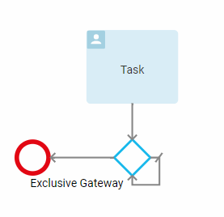
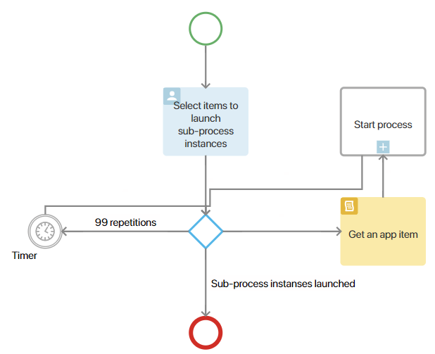

This article only describes the errors that occur during the execution of business processes. You can read about modeling errors in these articles: Publish a business process and Validate process logic.
When an error appears on a certain process step, it is displayed on the process instance page. There, you can decide how to handle the error: either skip this step or repeat it. If necessary you can also interrupt the process.
Critical and non-critical errors
All execution errors can be classified as critical or non-critical. In case of a critical error, the process is interrupted, and the users included in the Administrators group receive a message that the process was interrupted due to a critical error. In case of a non-critical error, the process continues, but the users included in the Administrators group are also notified about the error that occurred during the execution of the process.
Critical errors include:
- An error while executing Create app item. For example, such an error might occur if an app type variable was deleted from the context. To avoid this error, make sure that the app item is correctly specified in the Create app item activity.
- Error when starting a synchronous subprocess. When starting a synchronous sub-process, the execution of the parent business process is suspended. If an error occurs in such a sub-process, the parent process will be interrupted and you will see the message “Failed to start the subprocess”.
- Error in the timer intermediate event. You will see the warning “Failed to set up timer”, for example, if the context variable storing timer expiration value is not found or the system cannot calculate the time according to the business calendar.
Non-critical errors are:
- Error when assigning status. For example, if this status was deleted from the app. To avoid this error, make sure that all the valid app statuses are specified in the settings of the Manage status activity.
- Error when determining variable value. You will see the warning “Failed to change the value of the context variable”. This error might occur, for example, if in the settings of the connector that goes out of a gateway the right operand variable is not determined.
- Error when starting an asynchronous subprocess. When starting an asynchronous process, the execution of the parent business process does not stop. If an error occurs in such a sub-process, the parent process will not be interrupted, and you will see the warning “Failed to start the subprocess”.
- Error in notification. You will see the warning “Failed to send the notification” if, for example, the variable that stores the recipient is not determined. Check the Notification settings. The organizational chart item selected as the recipient might have been deleted by the moment the process started. Make sure that in the notification settings only existing employees, user groups, and organizational chart items are selected as recipients.
- Error when assigning a user task. This error might occur, for example, if the system fails to calculate task deadline according to the business calendar. You will see the message “Failed to calculate the task completion time”. In order to avoid this error, check task deadline settings. The system may fail to provide access to the context object, and consequently, assign the task to a user. In this case, you will receive the message “Failed to grant permissions”.
Interrupt a looped business process
A business process might get stuck at some step. For example, if an exclusive gateway has an outgoing default connector that targets the same gateway and another connector that targets an end event but has no specified condition. In this case, the process will repeat the same step over and over again, leaving the gateway and returning back to it.

By default, each step in the process can be repeated no more than 100 times. This helps to prevent endless execution of the process:
- In a circle, when you use an exclusive gate that is looped on itself.
- In parallel, when you start more than 100 instances of a sub-process.
If the number of repetitions exceeds the specified value, the process is automatically terminated, and the supervisor receives a corresponding notification.
Launch a process step more than 100 times
If you need to run a business process step more than 100 times, you can use an exclusive gateway and a timer of at least three minutes. In the gateway, you can divide the total number of repetitions into several parts less than 100 times each and route the process to a timer. You need it to pause the process to reset the system repetition counter. After such a stop, this counter will re‑count the remaining steps performed in a circle. In this way, you can bypass the maximum limit of 100 repetitions.
Let's assume that the process processes 101 app items. The user adds them on the task page. Then, using the exclusive gateway, sub‑process instances are launched with each of the items. In this example, the task is assigned to the executor.
To avoid an error in the process, add the following to the diagram:
- An exclusive gateway with a script. In such a way, you divide the total number of repetitions into several parts and launch them gradually to bypass the system maximum limit of 100 repetitions.
- A Script activity, which counts the number of items that have passed through the gateway.
- A timer lasting at least three minutes. It pauses the process when the gateway script records 99 repetitions of the sub‑process. During this time, the system repetition counter is reset, and you can continue executing the required step with the remaining items.

Consider these settings.
- On the Context tab, add variables for executing scripts and configuring connectors:
- Repetition counter. This is a variable of the Number type with the Integer option to count the number of sub‑process repetitions in the script on the gateway.
- Item counter. This is a variable of the Number type with the Integer option to count the number of items for which the sub‑process needs to be launched in the Script activity.
- App with items. This is a variable of the App type with the Many option to add a field in the Task activity.
- Sub-process app. This is a variable of the App type with the One option to set up the Start Process activity.
- On the Flow Chart tab, place the Task activity. Place a field with the app, the items of which need to be processed, on the task template.
- Add an exclusive gateway to the flow chart. In it, you can count the number of repetitions of the launched sub‑process instances. To do this, in the gateway settings, on the Service Variable tab, enable the Use service variable in the connector conditions option, select the Number type, and add the following script:
async function getIterationsNumber(): Promise<number> {
// Count the number of iterations in the loop using the Iteration counter context variable
Context.data.iterator = Context.data.iterator! + 1;
if (Context.data.iterator > 99) { // If the number of iterations in the loop is more than 99, then reset the iteration counter
Context.data.iterator = 0;
}
return Context.data.iterator; // Return the iterator counter value in the service variable
}
- Add a connector from the Task activity to the gateway.
- Place the Script activity on the flow chart. Specify a function in it to receive items one by one from the task, count them, and pass them to the next step Start Process.
// this script is not standard |
- Add a connector from the gateway to the Script activity.
- Place the Start Process activity on the flow chart. Select a custom process in its settings. This process is used to create a task with an attached app item.
- Add connectors from the Script activity to the Start Process activity, and from it to the gateway.
- Put a timer on the flow chart. Specify the execution period as three minutes.
- Add a connector from the gateway to the timer. In this connector, on the Conditions tab, set the following condition: Gateway service variable = 99.
Thus, when 99 repetitions of the launched sub‑process instances are reached, the main process will go to the timer and stop for three minutes. During this time, the system repetition counter, which recorded the completed step circles, will be reset. This will allow the sub-processes with the remaining items to continue running. To do this, add a connector from the timer to the gateway. If the number of repetitions is less than 99, the process will end, bypassing the timer. - Add a connector to the end event. On the Conditions tab, set the following condition: Item counter = 0. When all items have launched their own sub-process instances, the main process will end.
Found a typo? Select it and press Ctrl+Enter to send us feedback